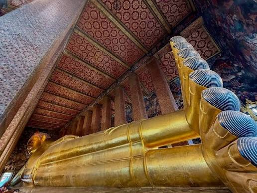

Ват Пхо

Ват Пхо (Wat Pho) — один из самых известных храмов Бангкока, расположенный рядом с Королевским дворцом. Храм особенно знаменит огромной статуей Лежащего Будды длиной около 46 метров, а также считается важным центром традиционного тайского массажа.
Где находится
Храм расположен в историческом центре Бангкока, на Sanam Chai Road и Maharaj Road, непосредственно рядом с Королевским дворцом.Стоимость посещения
Посещение платное:- Иностранцы — 300 бат (773,56₽) за человека.
- Дети ростом до 120 см — бесплатно.
- Билет позволяет посетить территорию храмового комплекса.
Время работы
Ват Пхо открыт ежедневно примерно с 08:00 до 19:30. Перед поездкой лучше проверить актуальное расписание на официальном сайте храма, поскольку время работы может меняться.Как добраться
Самый простой вариант — доехать на MRT до станции Sanam Chai, а затем немного пройти пешком.
Также удобно добраться по реке: можно воспользоваться лодкой по Чао Прайя и выйти на причале Tha Tien — от него до Ват Пхо несколько минут пешком.
Если вы уже посещаете Королевский дворец, то Ват Пхо находится буквально рядом, поэтому между ними можно спокойно пройти пешком.
Что посмотреть
Главная достопримечательность — огромная золотистая статуя Лежащего Будды. Кроме неё, на территории находятся многочисленные ступы, павильоны, статуи и богато украшенные храмовые здания.

Особый интерес представляет традиционная школа тайского массажа, расположенная на территории Ват Пхо. Здесь можно сделать традиционный тайский или массаж ног; стоимость начинается от 340 бат (877,54₽) за 30 минут.
Что находится рядом
Ват Пхо удобно включить в маршрут по историческому центру Бангкока:- Королевский дворец — прямо рядом.
- Ват Арун — на противоположном берегу Чао Прайя, можно переправиться на лодке.
- Река Чао Прайя — рядом с храмом.
- Чайнатаун — можно посетить после прогулки по историческому центру.
- Каосан Роуд — популярный туристический район неподалёку.